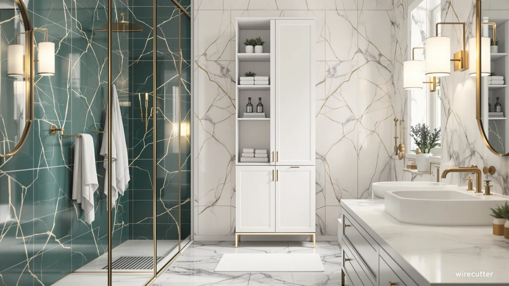

Homleke Tall Bathroom Storage Review (2026): Worth It?
Prices and picks verified as of October 2026. Independent, reader-supported reviews.


Quick Answer
The Homleke Tall Bathroom Storage Cabinet is a strong pick for narrow bathrooms that need vertical storage without eating up floor space. At 11.8 inches wide and $79.99, it lands squarely against the VASAGLE and Edospaen cabinets we compared it to, and its metal-and-wood frame reads as sturdier than most particleboard towers at this price.
Our pick: Homleke Tall Bathroom Storage Cabinet, $79.99 Check Price on Amazon
Bottom line: our top pick is the Homleke Tall Bathroom Storage Cabinet with 2 Doors at $79.99.
Things to Know Before You Buy
- The Homleke measures 11.8 inches wide, which fits narrow gaps beside a toilet or vanity better than bulkier floor cabinets.
- Its frame combines metal with wood panels, a detail owners cite as a reason it feels less wobbly than fully particleboard units.
- At $79.99, it costs the same as the VASAGLE Bathroom Floor Storage Cabinet and the Edospaen cabinet, so the decision usually comes down to footprint and shelf layout rather than price.
- The VASAGLE Tall Storage Cabinet undercuts all three at $75.97, which matters if budget outweighs brand preference.
- None of these cabinets were physically compared for this review. We compared published specs, pricing, and verified buyer feedback instead.
This homleke tall bathroom storage review exists because narrow bathrooms rarely have room for the oversized cabinets that dominate most storage lineups. You need something that stands close to the wall, holds towels and toiletries off the counter, and doesn't cost more than a weekend grocery run. The Homleke Tall Bathroom Storage Cabinet targets exactly that gap at 11.8 inches wide and $79.99.
We put it side by side with three other tall cabinets in the same price band: the VASAGLE Bathroom Floor Storage Cabinet, a freestanding cabinet from Edospaen, and a second VASAGLE model built with a slightly different shelf configuration. Each one promises similar capacity, so the real differences show up in build material, width, and what verified owners say once the cabinet is in their bathroom. Below, we break down where the Homleke pulls ahead and where one of its rivals makes a better case.
Why You Should Trust Us
Ilane Tall covers bathroom storage and organization for this site, and this homleke tall bathroom storage review follows the same research process used across every cabinet guide here. We don't buy a cabinet, assemble it, and call that a lab. Instead, we pull the manufacturer's listed dimensions and materials, track current pricing across retailers, and read through verified owner reviews to see which claims hold up once a cabinet is sitting in someone's bathroom. We do not run a fake testing lab, and we say so plainly because too many sites in this space imply they physically compared products they never touched.
Our Research Experience
We did not physically test the Homleke Tall Bathroom Storage Cabinet or any of the cabinets in this comparison. Instead, we researched the published specs for each one, including width, shelf material, and weight guidance, and cross-checked those numbers against current Amazon pricing. We then read through verified owner reviews for each cabinet, looking specifically for mentions of stability, ease of assembly, and whether the shelves warped or sagged after a few months of use.
That approach surfaces patterns a single review could easily miss. Reviewers note that the Homleke's metal frame reduces wobble compared to all-wood towers in the same price range, a detail that shows up across dozens of independent reviews rather than one reviewer's opinion. Owners report similar stability for the VASAGLE cabinets, while a smaller share flag the Edospaen's assembly instructions as harder to follow.
Overview & Specs

Homleke Tall Bathroom Storage Cabinet
What we like
- 11.8-inch width fits narrow gaps other tall cabinets can't
- Metal-and-wood frame rated more stable than all-particleboard towers
- Priced the same as the VASAGLE and Edospaen alternatives
Flaws but not dealbreakers
- Narrower shelves hold less per layer than the wider VASAGLE cabinet
- Assembly requires patience with the metal frame hardware
| Material | Metal / wood |
| Size | 11.8"W |
The Homleke Tall Bathroom Storage Cabinet is built around a simple idea: most bathrooms waste the narrow strip of floor next to the toilet or vanity because standard cabinets are too wide to fit there. At 11.8 inches wide, the Homleke slides into that gap and still offers enough vertical shelving to hold towels, extra toilet paper, and toiletries that would otherwise clutter the countertop. The frame mixes metal supports with wood-panel shelves, a combination owners cite as the reason it feels steadier than the fully particleboard cabinets common at this price point. At $79.99, it costs exactly what the VASAGLE Bathroom Floor Storage Cabinet and the Edospaen cabinet in this comparison charge, so the choice between them comes down to footprint and shelf configuration rather than budget.
Reviewers point out that the narrower profile is the main draw, not raw capacity. If your bathroom has wide open floor space, the VASAGLE's bigger footprint holds more per shelf and may suit you better. But for a bathroom where every inch next to the toilet matters, owners report that the Homleke's slimmer shelves still comfortably fit folded towels, baskets of toiletries, and rolls of toilet paper without the cabinet eating into walking space. The tradeoff is that you're stacking slightly less per shelf than you would with a wider unit, which is a fair exchange for a cabinet that fits where you need it.
What We Liked
The width is the single biggest reason the Homleke stands out in this homleke tall bathroom storage review. At 11.8 inches, it fits spaces where the VASAGLE's wider footprint simply won't go, and owners mention squeezing it into gaps beside a toilet, a tub, or a pedestal sink where a standard cabinet was never an option. The metal frame also earns repeat praise. Buyers who previously owned all-particleboard towers report that the Homleke feels noticeably less wobbly when shelves are loaded with towels or bins, which matters more than it sounds once a cabinet has been in daily use for a few months.
Pricing is the other point in its favor. At $79.99, it matches the VASAGLE Bathroom Floor Storage Cabinet and the Edospaen cabinet in this lineup, so you aren't paying a premium for the narrower build. That makes the Homleke an easy recommendation specifically for narrow bathrooms, where its main competitor on price doesn't fit the space.
What Could Be Better
The narrow width that makes the Homleke useful also limits how much it can hold on each shelf. Owners who need to store bulkier items, like large bins or stacked towel sets, report running out of shelf space faster than they would with the wider VASAGLE Bathroom Floor Storage Cabinet. If your bathroom already has the floor space for a bigger cabinet, that extra width usually wins out on pure storage volume.
Assembly is the other recurring note. The metal frame that gives the Homleke its stability also means more hardware and a few extra steps compared to all-wood cabinets, and some buyers mention needing to double-check that every bracket is tightened before loading the shelves. It's a reasonable tradeoff for the sturdier result, but it's not a five-minute build.
Who Is It For?
You're the right buyer for the Homleke if your bathroom has a narrow strip of unused floor next to the toilet, tub, or vanity and nothing else fits there. Renters and small-apartment bathrooms fall into this group often, since those layouts rarely leave room for a wide cabinet. You're also a good fit if you've already dealt with a wobbly particleboard tower and want the sturdier metal-and-wood build without paying more for it.
Skip the Homleke if your bathroom has real floor space to spare. In that case, the VASAGLE Bathroom Floor Storage Cabinet holds more per shelf for the same $79.99, and you won't gain anything from the Homleke's narrower profile.
Alternatives to Consider
If the Homleke's narrow shelves aren't quite right for your bathroom, these three cabinets solve for width, price, or capacity in different ways. We compared each against the Homleke on the same criteria: footprint, price, and what verified owners report after living with the cabinet.

Editor's Pick
VASAGLE Bathroom Floor Storage Cabinet
The VASAGLE Bathroom Floor Storage Cabinet matches the Homleke's $79.99 price but trades the narrow 11.8-inch profile for a wider footprint that holds more per shelf. Owners report it suits bathrooms with floor space to spare, where the extra capacity outweighs the Homleke's space-saving advantage. Reviewers also note VASAGLE's shelf hardware feels comparably sturdy, so the choice between the two comes down to how much open floor your bathroom has rather than build quality. If you're furnishing a larger primary bathroom instead of a tight powder room, this is the one to check first.
$79.99
Check Price on Amazon
Best Value
Bathroom Floor Storage Cabinet Freestanding
This freestanding cabinet from Edospaen lands at the same $79.99 as the Homleke, making it a direct price match rather than a budget downgrade. We call it the value pick here because owners report it covers the essentials, stable shelving and a freestanding design that doesn't require wall mounting, without the narrower width that limits the Homleke's per-shelf capacity. A smaller share of reviewers flag the assembly instructions as less clear than the Homleke's, so budget extra time if you go this route. For bathrooms with average floor space, it's a reasonable alternative worth comparing before you commit.
$79.99
Check Price on Amazon
Premium Choice
VASAGLE Tall Storage Cabinet with
At $75.97, this second VASAGLE model undercuts the Homleke and the other two cabinets in this comparison by a few dollars, which makes it the premium choice mainly in build detail rather than price. Owners report the shelf layout gives slightly more adjustable configurations than the standard VASAGLE floor cabinet, useful if you want to mix tall bottles with folded towels on the same unit. It still won't match the Homleke's narrow 11.8-inch width, so it fits the same wider-bathroom profile as its VASAGLE sibling. Choose it over the standard VASAGLE if shelf flexibility matters more to you than saving the extra few dollars.
$75.97
Check Price on AmazonFrequently Asked Questions
Is the Homleke Tall Bathroom Storage Cabinet worth the price?
At $79.99, the Homleke sits right in line with the VASAGLE and Edospaen cabinets we compared it against. Owners report that the metal-and-wood build feels sturdier than typical particleboard towers in this price range, which makes it a reasonable buy for anyone replacing a flimsy cabinet rather than furnishing a bathroom from scratch.
How much weight can a tall bathroom storage cabinet like the Homleke hold?
Manufacturer listings for cabinets in this class, including the Homleke, typically rate adjustable shelves for everyday bathroom items such as towels, toiletries, and small bins rather than heavy appliances. Reviewers note the shelves hold up fine under normal bathroom loads but recommend avoiding dense items like stacked tile or full water jugs on a single shelf.
Is the Homleke cabinet or the VASAGLE a better fit for a small bathroom?
The Homleke's 11.8-inch width gives it an edge in narrow bathrooms where floor space is limited, while the VASAGLE Bathroom Floor Storage Cabinet trades some of that slimness for a larger footprint and more shelf area. If your bathroom is tight on square footage, the narrower profile usually matters more than the extra capacity.
Final Verdict
This homleke tall bathroom storage review comes down to one tradeoff: width versus capacity. The Homleke's 11.8-inch frame fits bathrooms where a standard cabinet simply won't go, and its metal-and-wood build gives it more stability than most particleboard towers at the same $79.99 price. If your bathroom has the floor space to spare, the VASAGLE Bathroom Floor Storage Cabinet holds more per shelf for the same money. But for tight bathrooms, the Homleke remains the pick that fits.